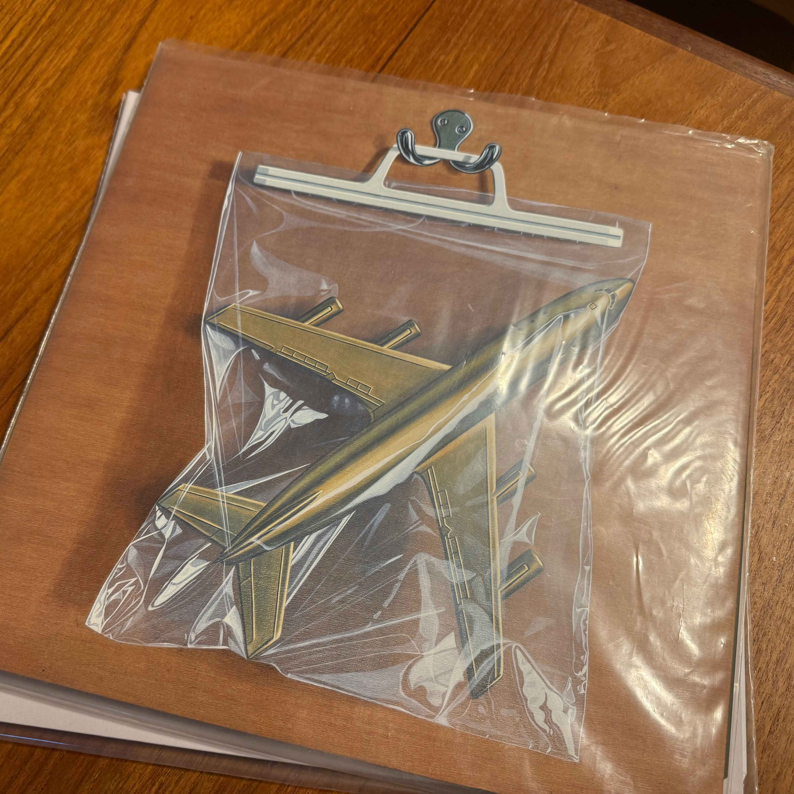
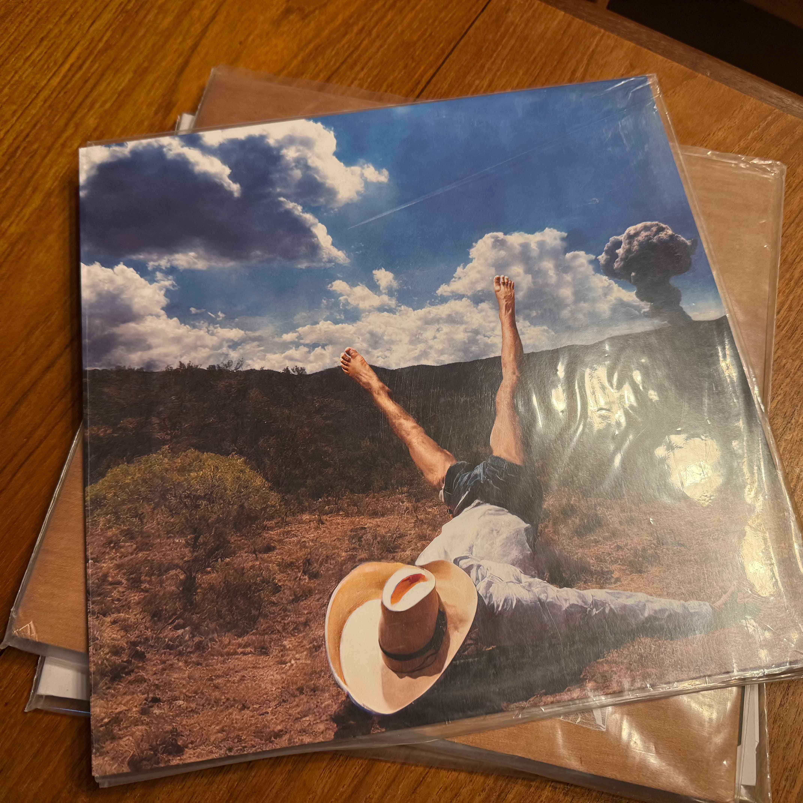
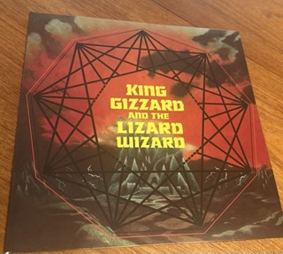

This page is a showcase of my favourite albums of the 2020s thus far that I also own as part of my record collection. These records cover a great range of genres and musical expression. I hope that this showcase of great records can help you find something new to listen to.
First on the list is Black Midi’s Hellfire. The third studio release from the British experimental trio. This album was my most listened in 2022 and with good reason. The group blends genres more than your local curry shop blends spices. From jazz to punk and everything in between Black Midi are masters of the avant-garde a musical range which truly shines through on this record. Standout tracks for me include the erratically addictive energy of Sugar/Tzu and the criminally underrated ballad The Defence. A full listen of this record is truly a feast for the senses for those willing to step in the ring.
Ants From Up There
Black Country, New Road, 2022

BCNR WebsiteIntro track leading into Chaos Space Marine Ants From Up There
Another fantastic release from 2022 Black Country, New Road’s sophomore release Ants From Up There. This seven-member troop produce a sound that should be coming from opera halls instead of a group of kids from Brixton. The range of musicality and blending of traditional orchestral style create a uniquely fresh and timeless sound. Standouts include the triumphant bridges and arpeggios of Chaos Space Marine as well as the devolving controlled chaos of Snow Globes driven by its awe-inspiring drums. Unfortunately as of writing the band is no longer fully intact but this record serves as an emotional rollercoaster that always stirs a sense of nostalgia in me.
3D Country
Geese, 2022

Geese WebsiteOpening head banger from 3D Country 2122
First of the Brooklyn based entries on this list their 2023 sophomore album 3D Country really sees Geese come into their own. This post-punk group blends blues and 70’s inspired prog rock to deliver a unique and electric project. Geese are the only band on here that I’ve had the pleasure of seeing live and their eclectic and energetic sound in-person does not disappoint. Playing live they breakdown their sound into chaos only to wrap it back up and put a bow on it. It’s a real treat that they released an EP 4D Country featuring a few bonus tracks as well as a full length live album shortly after this project.
Dragon New Warm Mountain I Believe in You
Big Thief, 2022
Big Thief WebsiteMy favourite track and the closer of the album Blue Lightning
Dragon New Warm Mountain I Believe In You, have fun trying to get Siri to play this album while in the car. This album sees Brooklyn-based indie rock group Big Thief’s foray into the folk genre and we are all richer to have heard it. Often the tracks on this record feel more at home in the 1920’s than the 2020’s. The improvised instruments, casual recording style, and poetic lyricism. My favourites include Red Moon and Blue Lightening, both upbeat folky jams that make you want to tap your foot and sing along.
I guess what I’m getting at is that 2022 was a good year for music and I’m always a little behind. I’m excited to continue catching up on last year's music and hopefully add a few more great records to this list.
Honerable Mention
Nonagon Infinity

While still a relatively new albumn in my collection Nonagon Infinity released in 2016 so doesn't quite fit the list of 2020's albumns. Still it is a standout work from the Australian experimentalists King Gizzard and The Lizard Wizard. This infinitely looping albumn is a rollercoaster of prog rock bangers.